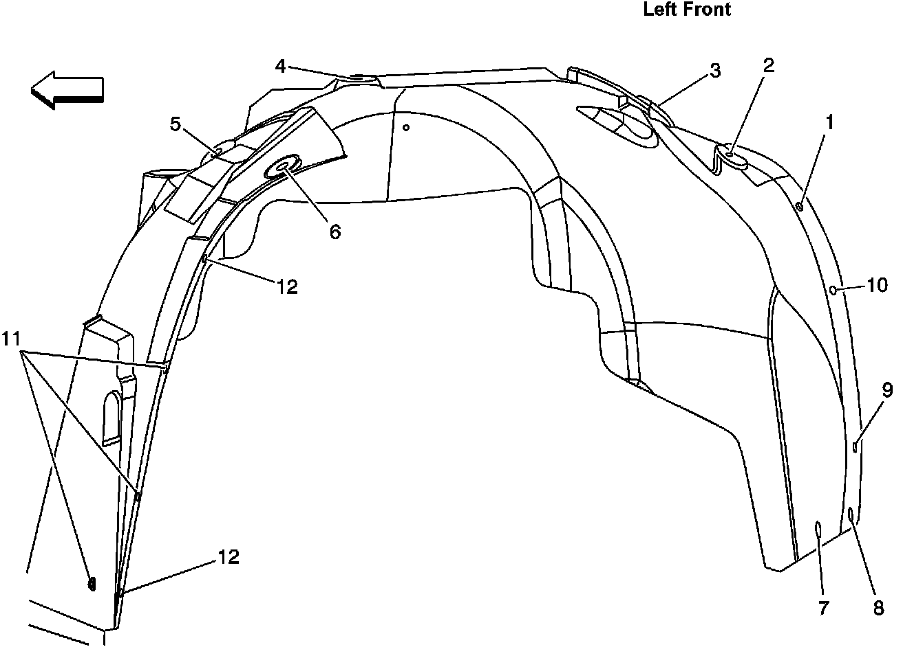

Body - Attachment Sequence For Front Fender Liner
Bulletin No.: 06-08-111-001Date: March 20, 2006
INFORMATION
Subject:
Information on Attachment Sequence for Proper Front Liner to Fender Fit
Models:
2007 Cadillac Escalade, Escalade ESV, Escalade EXT
2007 Chevrolet Tahoe
2007 GMC Yukon

This bulletin is being issued to provide the technician with the proper attaching sequence procedure. This procedure will ensure a tight fit between the liner and the fender.

Parts Information

Disclaimer